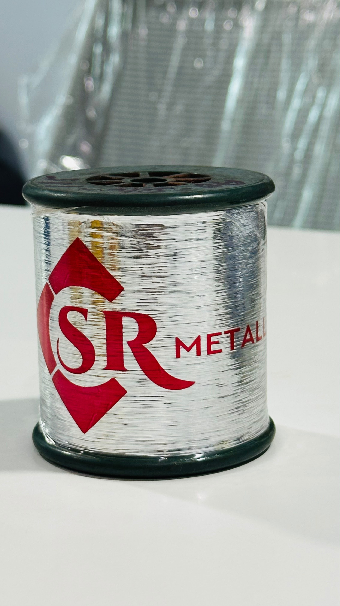

20 Years of experience
Two decades of hands-on experience in the metallic and zari yarn business.
20 YEARS OF EXPERIENCE
S R Metallic specialises in M-Type Metallic Yarn, with custom colours and cutting options tailored to the needs of our customers.

ABOUT S R METALLIC
For the last 20 years, S R Metallic has built a strong name in the zari and metallic yarn market by solving complex requirements and staying close to customer needs.
We manufacture M-Type Metallic Yarn in a wide range of colours and cutting styles. Our customers can specify the colour and cutting requirement they need, and we work to deliver a suitable solution.
Many of our customers have been associated with us for 7–8 years, reflecting the long-term relationships we aim to build through dependable service and practical solutions.
OUR PRODUCT
Flexible options for colour and cutting, tailored to your requirement.

Our M-Type Metallic Yarn is available in different colour options and cutting styles to help customers achieve the look and finish they need.
WHY S R METALLIC
Two decades of hands-on experience in the metallic and zari yarn business.
Colour and cutting options can be adapted to your specific requirement.
We have grown by taking on challenging requirements and finding practical solutions.
Many customers have stayed connected with us for 7–8 years and beyond.
PRODUCT GALLERY
A selection of S R Metallic product visuals.
LET'S TALK
Tell us what you need. We’ll be happy to discuss a suitable M-Type Metallic Yarn solution.